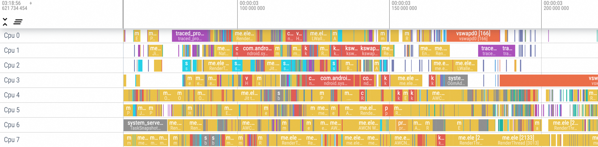
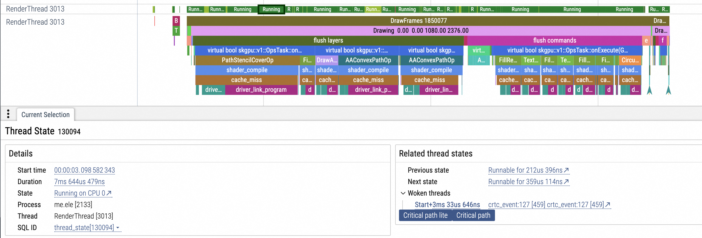
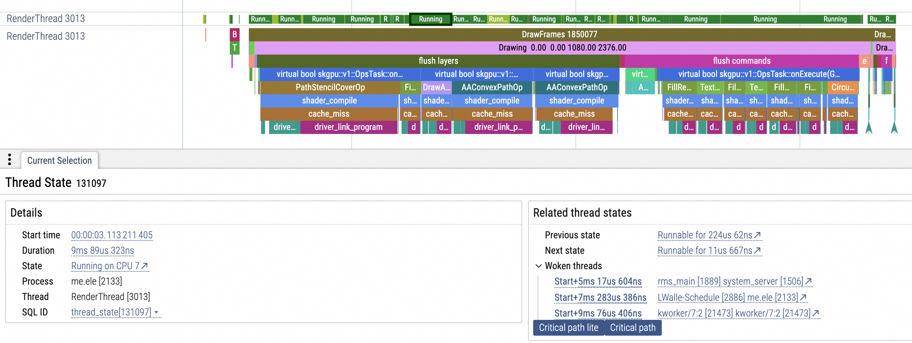

其实本文题目更合适叫做《Android 绑定任意线程到任意 CPU》，其范围也是涵盖了题目的，但是不能体现其最大价值性能优化
绑定线程到 CPU 的核心就是调用sched_setaffinity函数，但是我们要为此做一些准备：
了解sched_setaffinity函数，确定绑定某线程到某 CPU 上需要什么参数。 了解手机多核 CPU 架构，如何获取到每个 CPU 的频率，频率越高的表示性能越高，相反则越差。 了解 Android 系统中某个进程下的所有线程的各种信息，包括线程 main、RenderThread 等系统线程。 确定目标线程运行在哪个 CPU 上，用于确定结果。 1、sched_setaffinity 函数 该函数用于设置指定进程的 CPU 亲和性，设置线程和 CPU 亲和性应该使用pthread_setaffinity_np，然而在实践中我发现 Android 中没有pthread_setaffinity_np，Android 开发中可以使用sched_setaffinity代替，为了避免偏移主题这里只详细介绍sched_setaffinity。
函数原型：
1 int sched_setaffinity (pid_t pid, size_t cpusetsize, const cpu_set_t *mask)
参数：pid：要设置亲和性的进程的 PID。我们可以用线程 tid （内核级线程 ID）来设置线程和 CPU 的亲和性。 cpusetsize：cpu_set_t 类型的大小。 mask：指向一个 cpu_set_t 的指针，表示进程可以运行在哪些 CPU 上。 2、CPU 频率 2.1、认识 CPU 频率 目前市面上几乎所有手机都是多核，我们用 Perfetto 随便抓个 Trace 就可以看到 CPU 被占用的情况，如图一所示：
不了解 Perfetto 如何分析 Trace 的可以看我文章：https://www.yanzhenjie.com/post/20240406/b3b882a8973b/
 可以看到我这个手机有 8 个 CPU，其中 CPU7 看起来是最繁忙的，在这个手机上，它是唯一的大核 CPU，也是 main 线程所绑定的 CPU。
对于任何 Android 手机，我们可以在/sys/devices/system/cpu/目录下看到所有 CPU：
1 2 3 4 hw_arm64:/ $ cd /sys/devices/system/cpu/ hw_arm64:/sys/devices/system/cpu $ ls cpu0 cpu1 cpu2 cpu3 cpu4 cpu5 cpu6 cpu7 offline online cpufreq cpuidle ... hw_arm64:/sys/devices/system/cpu $
也可以查看每个 CPU 的频率，以一个 8 核 8 线程的 CPU 为例：
1 2 3 4 5 6 7 8 hw_arm64:/sys/devices/system/cpu $ cat cpu0/cpufreq/cpuinfo_max_freq 1804800 hw_arm64:/sys/devices/system/cpu $ cat cpu1/cpufreq/cpuinfo_max_freq 1804800 hw_arm64:/sys/devices/system/cpu $ cat cpu2/cpufreq/cpuinfo_max_freq 1804800 hw_arm64:/sys/devices/system/cpu $ cat cpu3/cpufreq/cpuinfo_max_freq 1804800 hw_arm64:/sys/devices/system/cpu $ cat cpu4/cpufreq/cpuinfo_max_freq 2419200 hw_arm64:/sys/devices/system/cpu $ cat cpu5/cpufreq/cpuinfo_max_freq 2419200 hw_arm64:/sys/devices/system/cpu $ cat cpu6/cpufreq/cpuinfo_max_freq 2419200 hw_arm64:/sys/devices/system/cpu $ cat cpu7/cpufreq/cpuinfo_max_freq 2841600
可以看出来，根据 CPU 频率的不同，可以按照将 CPU 频率分为 3 组，2841600 是唯一一个大核 CPU，也可以看出上文提到的结论。
至此，我们可以得出 1 个简单的结论：我们可以在代码中获取到手机的 CPU 列表，并可以按照 CPU 频率对 CPU 进行分组。
2.2、按频率分组 CPU 列表 根据以上规则，我们可以按照 CPU 频率给 CPU 列表分组：
1 2 3 4 5 6 7 8 9 10 11 12 ./ ├── 2841600 │ └── cpu7 ├── 2419200 │ ├── cpu6 │ ├── cpu5 │ └── cpu4 └── 1804800 ├── cpu3 ├── cpu2 ├── cpu1 └── cpu0
在 C++ 中按照规则读取到这个按频率分组的 CPU 列表：
1 2 3 4 5 6 7 8 9 10 11 12 13 14 15 16 17 18 19 20 21 22 23 24 25 26 27 28 29 30 31 32 33 34 35 36 37 38 39 40 41 42 43 44 45 46 47 48 49 50 51 52 53 54 55 56 57 58 59 60 61 62 63 64 65 66 67 #include <fstream> #include <string> #include <map> #include <vector> #include <dirent.h> #include <regex> #include "CPUUtils.h" #include "../log/Log.h" #define TAG "CPUUtils" const std::regex CPUUtils::cpuNamePattern ("^cpu[0-9]+$" ) std::map<int , std::vector<std::string>, std::greater<>> CPUUtils::findCPUFreqMap () { const std::string cpuDirPath = "/sys/devices/system/cpu" ; std::map<int , std::vector<std::string>, std::greater<>> freqCPUMap; const char *dirPath = cpuDirPath.c_str (); DIR *dir = opendir (cpuDirPath.c_str ()); if (!dir) { LOGE (TAG, "findCpuFreqMap, the system/cpu [%s] can be not found." , dirPath); return freqCPUMap; } struct dirent *entry; while ((entry = readdir (dir)) != nullptr ) { const std::string cpuFileName = entry->d_name; if (!std::regex_match (cpuFileName, CPUUtils::cpuNamePattern)) { continue ; } std::string maxFreqFilePath = cpuDirPath; maxFreqFilePath.append ("/" ); maxFreqFilePath.append (cpuFileName); maxFreqFilePath.append ("/cpufreq/cpuinfo_max_freq" ); std::ifstream maxFreqFile (maxFreqFilePath) ; if (!maxFreqFile) { LOGE (TAG, "findCpuFreqMap, the cpuinfo_max_freq [%s] can be not found." , maxFreqFilePath.c_str ()); continue ; } std::string line; if (std::getline (maxFreqFile, line)) { try { int frequency = std::stoi (line); freqCPUMap[frequency].push_back (cpuFileName); } catch (const std::exception &e) { LOGE (TAG, "findCpuFreqMap, error occurred on parse frequency: %s." , e.what ()); } } } closedir (dir); return freqCPUMap; }
接着上一个方法，可以获取到指定级别的 CPU 列表：
1 2 3 4 5 6 7 8 9 10 11 12 13 14 15 16 17 18 19 20 21 22 23 24 25 26 27 28 29 30 31 32 33 34 35 36 37 std::vector<std::string> CPUUtils::findCPUListByLevel (const int level, const bool upward) { const auto findCPUFreqMap = CPUUtils::findCPUFreqMap (); if (findCPUFreqMap.empty ()) { return {}; } std::vector<int > freqList; freqList.reserve (findCPUFreqMap.size ()); for (const auto &pair: findCPUFreqMap) { freqList.push_back (pair.first); } const int size = static_cast <int >(freqList.size ()); const int freqIndex = size > level ? level : (upward ? (size - 1 ) : -1 ); if (freqIndex > -1 ) { const int freq = freqList[freqIndex]; auto it = findCPUFreqMap.find (freq); if (it != findCPUFreqMap.end ()) { return it->second; } } return {}; }
3、RenderThread 3.1、认识 RenderThread RenderThread 是 Android 系统中一个专门用于处理 View 渲染工作的线程，它的引入主要是为了优化渲染效率和提升用户体验。在 Android 5.0（Lollipop）之前，Android 应用程序的 main 线程同时负责处理 UI 绘制和 Open GL 渲染等任务。这可能导致 main 线程在渲染复杂 UI 时出现阻塞，影响应用程序的流畅性。从 Android 5.0 开始，Android 系统引入了 RenderThread，将 UI 渲染任务从主线程中分离出来，从而提高了渲染效率和流畅度。
RenderThread 主要功能：
RenderThread 负责处理 View 的渲染工作，包括绘制、合成和显示等操作。 它使用双缓冲机制进行渲染，能够减少屏幕闪烁和卡顿现象。 RenderThread 还可以提前对 View 进行预渲染，减少渲染任务的延迟。 RenderThread 工作原理：
当应用程序需要渲染 UI 时，主线程会创建一个渲染任务并提交给 RenderThread。 RenderThread 在独立的线程中执行渲染任务，并使用 GPU 进行硬件加速渲染。 渲染完成后，RenderThread 将渲染结果提交给 SurfaceFlinger 进程进行合成和显示。 RenderThread 与 main 线程的区别
职责不同：main 线程是 Android 应用程序的主入口点，负责处理用户输入、事件分发和 UI 更新等任务。它是应用程序的核心线程，负责执行应用程序的主要逻辑。RenderThread 则专注于处理 View 的渲染工作，减轻主线程的负担，提高渲染效率和流畅度。 并行处理：main 线程通常是顺序执行任务的，而 RenderThread 可以并行处理多个 View 的渲染任务。这意味着即使某个 View 的渲染任务比较复杂或耗时较长，也不会阻塞其他 View 的渲染或主线程的执行。 硬件加速：RenderThread 利用 GPU 进行硬件加速渲染，能够显著提高渲染速度和效率。而 main 线程则不直接参与硬件加速渲染过程。 交互方式：main 线程与 RenderThread 之间通过特定的接口和机制进行交互。例如，主线程可以通过提交渲染任务给 RenderThread 来触发渲染操作，而 RenderThread 则可以通过回调等方式将渲染结果通知给主线程。 3.2、RenderThread 默认未绑定 CPU 回到主题，我们来观察 RenderThread 运行在哪个 CPU 上，找到应用的 RenderThread，并在 RenderThread status 横轴找到相对比较繁忙的阶段，选中 Running 阶段，如图三所示它运行在CPU 0，也就是小核 CPU：
 偶尔又运行在中核 CPU 或大核 CPU，如图三所示，运行在大核 CPU：
 这就是本文题目的原因，如果 RenderThread 一直运行大核 CPU 组，那么渲染性能会不好好一点？
4、获取任意线程 tid 对于本文的场景来说，线程有两类，“我”的线程是可以拿到线程实例的，“他”的线程无法拿到线程实例。
可以获取到实例的：
当前线程，可以拿到实例，无论 C++ 还是 Java。 由“我”创建的线程，可以拿到实例，无论 C++ 还是 Java。 无法获取到实例的：
比如 main 线程、RenderThread 线程。 4.1、获取当前线程 tid 在 C++ 中，获取当前线程的 tid（包括 C++ 的线程或者 Java 的线程），或者由“我”创建/启动的线程是可以直接拿到 tid 的。
获取当前线程的 tid：
1 2 3 4 5 6 7 #include <unistd.h> int ThreadUtils::bindThreadToCPU (const int cpuNumber) pid_t tid = gettid (); ...; }
获取“我”创建的线程的 tid，使用pthread_gettid_np函数：
1 2 3 4 5 6 7 8 9 10 11 12 13 14 15 16 17 18 void * thread_function (void * arg) ...; return nullptr ; } void startWork () pthread_t thread; int result = pthread_create (&thread, nullptr , thread_function, nullptr ); if (result != 0 ) { LOGI (TAG, "pthread_create failed: %d" , result); return ; } pid_t tid = pthread_gettid_np (thread); LOGI (TAG, "Created thread tid: %d" , tid); pthread_join (thread, nullptr ); }
4.2、获取其他线程的 tid 当应用启动后，该应用的所有线程信息都位于/proc/${process_id}/task下，结构如下：
1 2 3 4 5 6 7 8 9 10 11 ├── ├── thread_id1 │ └── status ├── thread_id2 │ └── status ├── thread_id3 │ └── status ├── thread_id4 │ └── status └── thread_id5 └── status
我们可以先在电脑上做一下验证。
首先，我们查看目标应用的进程 id：
1 2 Harry: ~ adb shell ps | grep com.yanzhenjie.android u0_a130 3303 300 14463340 160012 0 0 S com.yanzhenjie.android
然后进入该目录，查看线程列表：
1 2 3 hw_arm64:/ cd /proc/3303/task hw_arm64:/proc/3303/task ls 3303 3313 3314 3315 3316 3317 3318 3319 3320 3321 3322 3323 3324 3325 3333 3374 3375 3378 3465
打印某个线程的信息（为方便理解去掉了真实信息，仅保留结构和描述）：
1 2 3 4 5 6 7 8 9 10 11 12 13 14 15 16 17 18 19 hw_arm64:/proc/3303/task cat ./3303/status Name: <线程名> State: <状态> (<状态解释>) Tgid: <线程组ID> Ngid: <线程组ID> Pid: <线程ID> PPid: <父线程ID> TracerPid: <跟踪进程ID> Uid: <用户ID> <有效用户ID> <真实用户ID> <已保存用户ID> Gid: <组ID> <有效组ID> <真实组ID> <已保存组ID> FDSize: <文件描述符表大小> Groups: <所属组ID列表> NStgid: <命名空间线程组ID> NSpid: <命名空间线程ID> NSpgid: <命名空间进程组ID> NSsid: <命名空间会话ID> VmPeak: <虚拟内存峰值> ...
我们主要关注：
1 2 Name: RenderThread Pid: 3314
到此我们就可以获取到指定名称线程的 tid 了，这里的 pid 就是内核 tid，和/proc/3303/task目录下的子目录名称一致。
我们可以以线程名称去对应文件和 Name 做匹配，如果匹配到代表上级目录名称或者 Pid 就是内核 tid：
1 2 3 4 5 6 7 8 9 10 11 12 13 14 15 16 17 18 19 20 21 22 23 24 25 26 27 28 29 30 31 32 33 34 35 36 37 38 39 40 41 42 43 44 45 46 47 48 49 50 51 52 53 54 55 56 57 58 59 60 61 62 63 64 65 66 67 68 69 int ThreadUtils::findThreadId (const std::string &threadName) const int pid = getpid (); const std::string taskDirPath = "/proc/" + std::to_string (pid) + "/task" ; LOGD (TAG, "findThreadId on path: %s" , taskDirPath.c_str ()); DIR *dir = opendir (taskDirPath.c_str ()); if (dir == nullptr ) { LOGE (TAG, "findThreadId, dir [%s] can be not found." , taskDirPath.c_str ()); return -1 ; } struct dirent *entry; while ((entry = readdir (dir)) != nullptr ) { std::string threadId = entry->d_name; if (threadId == "." || threadId == ".." ) { continue ; } std::string statusFilePath = taskDirPath; statusFilePath.append ("/" ); statusFilePath.append (threadId); statusFilePath.append ("/status" ); std::ifstream statusFile (statusFilePath) ; if (statusFile) { std::string line; while (std::getline (statusFile, line)) { if (line.find ("Name" ) != std::string::npos) { size_t found = line.find (':' ); if (found != std::string::npos) { std::string name = Utils::trim (line.substr (found + 1 )); if (threadName == name) { closedir (dir); LOGI (TAG, "findThreadId, id of [%s] has been found: %s." , threadName.c_str (), threadId.c_str () ); return std::stoi (threadId); } } break ; } } } } closedir (dir); LOGE (TAG, "findThreadId, id of [%s] can be not found." , threadName.c_str ()); return -1 ; } std::string Utils::trim (const std::string &str) { auto start = str.find_first_not_of (" \t" ); auto end = str.find_last_not_of (" \t" ); if (start == std::string::npos) { return "" ; } return str.substr (start, end - start + 1 ); }
5、设定线程 CPU 亲和性 再回顾下sched_setaffinity函数：
1 int sched_setaffinity (pid_t pid, size_t cpusetsize, const cpu_set_t *mask)
参数：pid：要设置亲和性的进程的 PID。我们可以用线程 tid （内核级线程 ID）来设置线程和 CPU 的亲和性。 cpusetsize：cpu_set_t 类型的大小。 mask：指向一个 cpu_set_t 的指针，表示进程可以运行在哪些 CPU 上。 所以对sched_setaffinity的封装提供 2 个参数，1 个是线程，另一个是 CPU 序号：
1 2 3 4 5 6 7 8 9 10 11 12 13 14 15 16 17 18 19 20 21 22 23 24 25 26 27 28 29 30 31 32 33 34 35 36 37 38 39 40 41 int ThreadUtils::bindThreadToCPU (const int cpuNumber) pid_t tid = gettid (); int bind = ThreadUtils::bindThreadToCPU (tid, cpuNumber); return bind; } int ThreadUtils::bindThreadToCPU (const int threadId, const int cpuNumber) cpu_set_t mask; CPU_ZERO (&mask); CPU_SET (cpuNumber, &mask); long max_cpus = sysconf (_SC_NPROCESSORS_CONF); if (cpuNumber < 0 || cpuNumber >= max_cpus) { LOGE (TAG, "bindThreadToCPU, cpu %d is invalid." , cpuNumber); return false ; } int bind = sched_setaffinity (threadId, sizeof (mask), &mask); if (bind == 0 ) { LOGI (TAG, "bindThreadToCPU, %d, success." , threadId); } else { LOGE (TAG, "bindThreadToCPU, %d, error: %d, %s" , bind, errno, strerror (errno)); } return bind; }
到这里，所有关键的难点和代码都给出了，剩下的自己随便封装即可，为了完整性，我还是给出所有的代码。
6、JNI 向 Java 提供接口 设定当前线程到指定级别 CPU 亲和性的接口：
1 2 3 4 5 6 7 8 9 10 11 12 13 14 15 16 17 18 19 20 21 22 23 24 25 26 27 28 29 30 31 32 33 34 JNIEXPORT jint JNICALL Java_com_yanzhenjie_android_Harry_bindCurrentThreadToCPU ( JNIEnv *env, jclass clazz, jint cpuLevel, jboolean upward) const auto cpuList = CPUUtils::findCPUListByLevel (cpuLevel, upward); if (!cpuList.empty ()) { const int cpuSize = static_cast <int >(cpuList.size ()); const int cpuIndex = Utils::randomInt (0 , cpuSize - 1 ); const auto &cpu = cpuList[cpuIndex]; const int cpuNum = std::stoi (cpu.substr (3 )); int bound = ThreadUtils::bindThreadToCPU (cpuNum); Log::i (env, TAG, "bindCurrentThreadToCPU, level-%s cpu %s: %s" , {std::to_string (cpuLevel), std::to_string (cpuNum), std::to_string (bound)} ); return bound; } return -1 ; }
设定指定名称的线程到指定级别 CPU 亲和性的接口，比如用于 RenderThread：
1 2 3 4 5 6 7 8 9 10 11 12 13 14 15 16 17 18 19 20 21 22 23 24 25 26 27 28 29 30 31 32 33 34 35 36 37 38 39 40 41 42 43 44 45 46 47 48 49 50 51 52 53 JNIEXPORT jint JNICALL Java_com_yanzhenjie_android_Harry_bindThreadToCPU ( JNIEnv *env, jclass clazz, jstring threadName, jint cpuLevel, jboolean upward) const char *chars = env->GetStringUTFChars (threadName, nullptr ); std::string name (chars) ; env->ReleaseStringUTFChars (threadName, chars); const int threadId = ThreadUtils::findThreadId (name); const auto cpuList = CPUUtils::findCPUListByLevel (cpuLevel, upward); if (threadId > -1 && !cpuList.empty ()) { const int cpuSize = static_cast <int >(cpuList.size ()); const int cpuIndex = Utils::randomInt (0 , cpuSize - 1 ); const auto &cpu = cpuList[cpuIndex]; const int cpuNum = std::stoi (cpu.substr (3 )); int bound = ThreadUtils::bindThreadToCPU (threadId, cpuNum); Log::i (env, TAG, "bindThreadToCPU, bind [%s] to level-[%s] cpu %s : %s" , {name, std::to_string (cpuLevel), std::to_string (cpuNum), std::to_string (bound)} ); return bound; } return -1 ; } int Utils::randomInt (const int min, const int max) std::random_device rd; std::mt19937 gen (rd()) ; std::uniform_int_distribution<> distr (min, max); int random_num = distr (gen); return random_num; }
以下是 JNI 接口对应的 Java 接口：
1 2 3 4 5 6 7 8 9 10 11 12 13 14 15 16 17 18 19 20 public static native int bindCurrentThreadToCPU (int cpuLevel, boolean upward) ;public static native int bindThreadToCPU (String threadName, int cpuLevel, boolean upward) ;
比如绑定 RenderThread 到中核 CPU：
1 int bound = Harry.bindThreadToCPU("RenderThread" , 1 , false );
比如绑定某个工作线程到中核 CPU：
1 2 3 4 5 6 7 8 9 10 Runnable runnable = new Runnable () { @Override public void run () { Thread.currentThread().setName("PreloadXml" ); final int bound = Harry.bindCurrentThreadToCPU(1 , false ); ...; } }; ThreadUtils.getWorkExecutor().execute(runnable);
调用后记得使用 Perfetto 验证是否生效，另外要多考虑一些边界情况，比如一个 4 核 4 线程的手机，可能只有一个频率组。
在实际应用中，我们的 App 可能有一个线程池会专门负责预渲染页面，比如我们可以依次绑定到中核 CPU 组的每个 CPU，提升页面渲染效率。
本文完，感谢阅读！